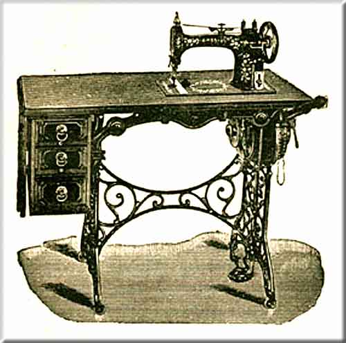

Brosius Sewing Machine & Motor Company
St. Charles, Illinois
'No Treadle' Spring-motor Driven Sewing Machine - 1892

©
Alan Quinn 2001
This page may not be reproduced or distributed in part or in whole without the prior written permission